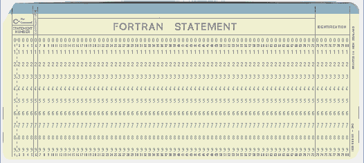
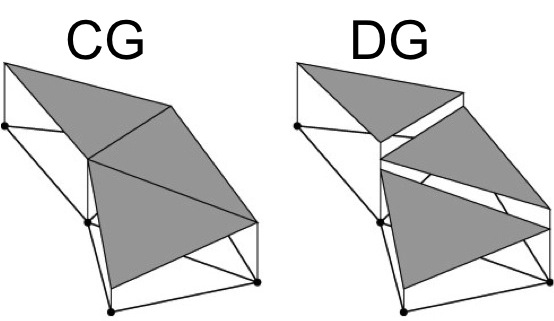
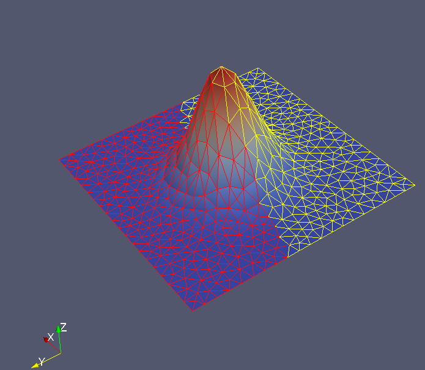

class: center, middle, # .blue[pyblitzdg:] ## .blue[The future of physical model development has arrived] ## Derek Steinmoeller, B.Math, M.Math, Ph.D. ### Founder/Developer @ Waterloo Quantitative Consulting Group. Developer @ Aquanty Inc. --- # .blue[Presentation Overview] ### Background: What is a physical model and why care? ### Physical model development: Past and Present. ### pyblitzdg: Putting the API to work ### Current features, and road-map. --- # .blue[What is a physical model?] * *Def*: A **physical model** is a mathematical (often continuum-based) description of a real-life phenomenon derived from the laws of physics. One must bind a physical domain of interest and well-defined boundary to the mathematical equations to form a well-posed problem. * E.g., A climate or weather model on a sphere, a Tsunami wave inundation prediction model in an ocean basin, turbulent flow around an aerofoil, etc. * Important in forecast and historical reanalysis products. * As we collect more measurements. * uncertainty goes down and demand for more accuracy goes up! * Already well-established set of GUI-driven engineering tools, e.g., Comsol Multiphysics, Fluent by Ansys CFX, OpenFOAM, ... , but can be limited in terms of physical scope, accuracy, and respecting energetics in a closed system. --- # .blue[The ghost of physical models past] * First weather forecast attempts consisted of roomfuls of 'computers' (here a vocation, not a machine) and no data assimilation, during WWI-era. <div class="center"> <small> <br/>(Stephen Conlin's depiction of Lewis Fry Richardson's "Weather Forecast Factory") </small> </div> --- # .blue[The ghost of physical models past (cont'd)] * Dawn of computing sparked ever-lasting love affair between Atmospheric Scientists and Numerical Analysts. <div class="center">  <small> <br/>(Fortran Punch Card: Early compilers and interpreters read these instead of text files.) </small> </div> * Early (automated) calculations were carried out in Fortran or Assembly. --- # .blue[What are today's models written in?] * FORTRAN! 😢 * Some C/C++. People focus on using low-level things that are efficient. Or use a blackbox which limits scope and accuracy in exchange for robustness. * Lose access to high-level modern (e.g., web) APIs unless wired to scripts! * **Sadness for developers**: crufty and/or spaghetti code, bad revision control/management, poor naming/whitespace conventions, few/no automated tests, ... other anti-patterns. * **Enter Python**: Wrappers for fast low-level operations in C/C++ and Fortran. High-level flexibility of an OO-scripting language. How do we drive adoption? --- # .blue[pyblitzdg: but why?] * Backend (*blitzdg*) in full C++: Efficient implementation details for Discontinuous Galerkin finite element methods. * 2D elements: Triangles in unstructured meshes. * Quads are WIP / in test. * 3D elements: Roadmapped. * DG and CG support. * Eliminate the years of work to re-implement boiler-plate finite element method (FEM) implementation details for every new model. * A neat-and-tidy FEM Python 3 API with sick docs / API reference and examples: https://wqcg.gitbook.io/pyblitzdg-official-docs/ * `ManyLinux2010`, `Mac OS`, and `Win64` wheel builds available on https://pypi.org/projects/pyblitzdg * `pip[3] install pyblitzdg` * GPLv3 -- Education/Research-friendly license. * Derivative works must also be GPL'd! --- # .blue[pyblitzdg: what does it do again?] <div class="center">  </div> * Finite compute resources mean continuum is approximated discretely! * We increase accuracy on a single triangle with higher-order polynomials. * Linear (N=1) is the traditional FEM. * DG-FEM and CG/SEM (spectral elements) work with arbitrary (but within-reason) N. * DG enforces interelement coupling with numerical finite volume fluxes. * Arbitrary/agnostic geometry is the cornerstone of the full FEM-family. --- # .blue[pyblitzdg: Fire it up!] <pre> import pyblitzdg as dg meshManager = dg.MeshManager() meshManager.readMesh('./input/box.msh') # Gmsh input reader N = 1 # Order of polynomials nodes = dg.TriangleNodesProvisioner(N, meshManager) outputter = dg.VtkOutputter(nodes) # Output for Paraview ctx = nodes.dgContext() x = ctx.x # Get Cartesian y = ctx.y # coordinates. # ... </pre> --- # .blue[pyblitzdg: The time-stepping loop] <pre> dt = 0.9*dx/np.max(abs(c)) while t < finalTime: (RHS1,RHS2,RHS3) = sw2dComputeRHS(h, hu, hv, g, H, ctx) h1 = h + 0.5*dt*RHS1 hu1 = hu + 0.5*dt*RHS2 # predictor hv1 = hv + 0.5*dt*RHS3 (RHS1,RHS2,RHS3) = sw2dComputeRHS(h1, hu1, hv1, g, H, ctx) h += dt*RHS1 hu += dt*RHS2 # corrector hv += dt*RHS3 h_max = np.max(np.abs(h)) if h_max > 1e8 or np.isnan(h_max): raise Exception("A numerical instability has occurred.") t += dt step += 1 outputter.writeFieldsToFiles({"eta": h-H, "u": hu/h, "v": hv/h}, step) </pre> --- # .blue[sw2dComputeRHS: What's inside?] * Implementation details depend on the flavour of elements (DG vs. CG). * In general, can rely on NumPy-style matrix-vector operations. * Rough guide (not an implementation. See examples in repo): <pre> def sw2dComputeRHS(h, hu, hv, g, H, ctx): ... # Get required variables from the context. F1 = hu # Define the flux vectors. G1 = hv F2 = (hu*hu)/h + 0.5*g*h*h # 'hu' equation G2 = (hu*hv)/h F3 = G2 # 'hv' equation G3 = (hv*hv)/h + 0.5*g*h*h RHS1 = -(rx * np.dot(Dr, F1) + sx*np.dot(Ds, F1)) + -(ry*np.dot(Dr, G1) + sy*np.dot(Ds, G1)) # Compute RHS2 = -(rx*np.dot(Dr, F2) + sx*np.dot(Ds, F2)) # Divergence + -(ry*np.dot(Dr, G2) + sy*np.dot(Ds, G2)) # of flux. ... return (RHS1, RHS2, RHS3) </pre> --- # .blue[Vancouver Harbour] <video class="video-js" controls preload="auto" width="750" height="425" controls data-setup="{}"> <source src="van_hbr.mp4"> Your browser does not support the video tag. </video> Problem setup courtesy of M. Dunphy @ DFO. --- # .blue[pyblitzdg: What's next?] * Scalable MPI (in progress, `mpi4py`) and GPU examples (`pycuda`, `cupy`, ...?). * Quadrilateral and 3D elements implemented in the C++ layer (with Python API end-points) * Examples for more physical models of interest: Maxwell's and Navier-Stokes equations. * Fully interactive and detailed set of docs in GitBook format: * https://wqcg.gitbook.io/pyblitzdg-official-docs/ * Visit our repository of latest updates and feature tracking: * https://github.com/WQCG/blitzdg * Join our slack for help (#WQCG). --- # .blue[Thank you!] <div class="center">  <small> <br/>Illustration of domain partitioning with pyblitzdg. </small> </div> <br/> ## .red[Any questions?]